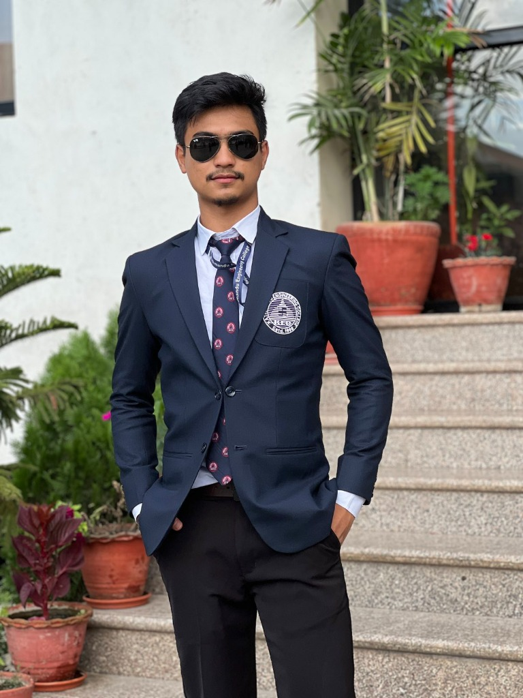
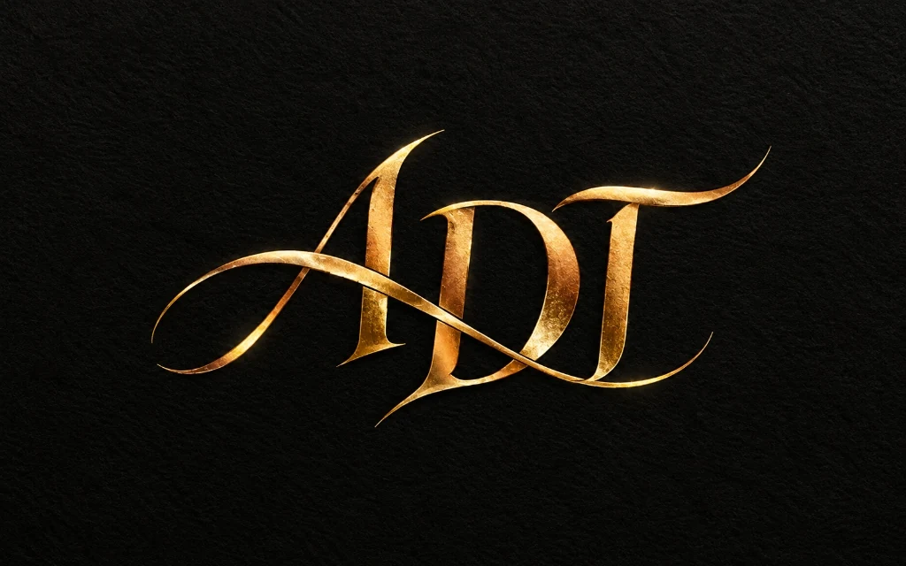

The Engineer Behind
the Work
Bio, technical stack, education, and the tools I build with — from firmware to applied ML.

IOE, TU
Shipped
& Grants
Leadership Posts
I'm a final-year Electronics, Communication & Information Engineering student at Kathmandu Engineering College, IOE, Tribhuvan University, based in Kathmandu, Nepal. I'm seeking AI/ML engineering opportunities, with interests in model evaluation, embedded inference, and AI workflow automation.
Through the Fuse AI Fellowship, I've worked on ML pipelines, model explainability, and agentic applications. My capstone, BiasAperture, examines demographic performance gaps in facial-analysis models. In SPARK, our four-person engineering project, I lead the embedded and ML architecture for a fall-detection wearable.
I use AI to help build systems, and build tools to make that work repeatable. My projects include Fleet Orchestrator for coordinating AI workflows and Agent-Customization-Sync for maintaining agent configurations across IDEs. My goal is to reduce repeated prompting and unnecessary model calls by turning recurring work into reusable tools and deterministic checks.
Alongside engineering, I'm an NSSR DataCamp Fellow, Vice Chair of the IEEE KEC KTM Student Branch, Event Manager at the Electronics Project Club, and a Makerspace Ambassador. I value clear ownership, reproducible work, and explaining what an evaluation does and does not establish.

Engineering Intelligent Systems
Use AI where it adds value. Turn repeatable work into tools. Check results with tests and explicit evaluation.
How I Build
My engineering approach: decide what needs model reasoning, automate repeatable steps, and make the result inspectable.
Efficient AI workflows
The Systems Merging Trilogy
High-velocity breadth exploration requires deliberate, recurring convergence. ADT's ecosystem matures across disciplined ~6–8 week expansion-and-consolidation cycles ("merging branches in real life"):
Evaluation and verification
Tools I Reach For
Capabilities in Context
Explore the work behind each capability, including project status and supporting artifacts.
Where I Learned This
What's in the Toolbox
What's on the Itinerary
Public schedule — events may be added or removed at any time. All times are NPT (UTC+5:45).
Frequently Asked Questions
Who is Aaradhya Dev Tamrakar (ADT)?
Aaradhya Dev Tamrakar (known as ADT) is an Electronics, Communication & Information Engineering student at Kathmandu Engineering College, IOE. He is a Fuse AI Fellow, NSSR DataCamp Fellow, and IEEE KEC KTM Vice Chair.
What does ADT specialize in?
ADT builds intelligent systems at the intersection of embedded firmware (C/C++), robotics, machine learning (Python/PyTorch/scikit-learn), Edge AI (ESP32-S3), and web backends (FastAPI).
What is the SPARK project?
SPARK is ADT's major BEI engineering project — an IoT fall-detection wearable featuring an ESP32-S3 microcontroller, MPU6050 IMU sensor, and on-device ML inference for real-time safety monitoring, developed with a four-person team.
Where is ADT based?
ADT is based in Kathmandu, Nepal, pursuing his Bachelor's degree at Kathmandu Engineering College, affiliated with the Institute of Engineering (IOE), Tribhuvan University.
What fellowships and roles does ADT hold?
ADT is a Fuse AI Fellow (Fusemachines), NSSR DataCamp Fellow, Vice Chair at IEEE KEC KTM Student Branch, EPC Event Manager, and KEC Makerspace Ambassador.
How does Aaradhya use AI in engineering?
I use AI for reasoning and development, then turn recurring tasks into reusable tools and deterministic checks. Reducing repeated context and unnecessary model calls is a design goal; any savings claim needs a measured baseline.
How do you approach token efficiency?
I aim to reduce repeated prompting, unnecessary model calls, and repeated setup through reusable tools and deterministic automation. This is an engineering goal; quantified savings require a measured workload and baseline.
How do you communicate project evidence?
I distinguish proposed work, implemented features, simulations, benchmark results, and hardware measurements. Project results need to be read alongside their evaluation conditions and limitations.
What opportunities is Aaradhya seeking?
I am seeking AI/ML engineering opportunities involving practical ML systems, model evaluation, embedded inference, or AI workflow automation. My electronics background supports work across software and physical systems.
How can I contact ADT?
Reach out via the Contact Page, email aaradhyadevtmr@gmail.com, or via LinkedIn and GitHub (@AaradhyaDT).
What is the Systems Merging Cadence (The 3 Merges)?
To prevent unconstrained architectural sprawl during rapid AI exploration, ADT follows an intentional ~6 to 8-week expansion-and-consolidation cadence (DEC-004): Merge I (Structural) unified public portfolio surfaces after the R2R Conference; Merge II (Operational) triaged academic deadlines during BEI pre-exam lockdown; and Merge III (Epistemic) grounded AI leverage, verified test gates, and engineering licensure alignment.